Atelier boutique de levain
Vous cherchez un moment pour vous, du lien, et le vrai goût de la maison ? Venez vivre une expérience spéciale d'apprentissage et de plaisir autour d'un pain au levain fait uniquement de farines complètes, avec une alimentation naturelle qui fait du bien au corps.
petits groupes intimistes
Au programme de l'atelier
- Vous apprendrez à faire un vrai pain au levain, simplement et sans complications.
- Chaque participante repart avec sa propre pâte, prête à cuire à la maison.
- Travail uniquement avec des farines complètes : épeautre et blé complet.
- Dégustations gourmandes de tartinades naturelles et de pains frais.
- Une initiation au monde de l'alimentation naturelle, accessible et savoureuse.
- Vous recevrez un livret de recettes complet et un accompagnement après l'atelier.

À quoi ressemble un atelier
De la préparation au pétrissage et aux pâtes, jusqu'à la table de dégustation. Vous pouvez faire défiler latéralement.


Comment ça se passe ?
Nous nous retrouvons un matin (ou un soir) détendu et joyeux chez moi : nous apprenons, pétrissons, goûtons et profitons ensemble. Ce n'est pas seulement un atelier de boulangerie, c'est une expérience de reconnexion avec soi-même, avec une vraie nourriture et avec la simplicité.
Et le levain lui-même ?
Le levain est un mélange vivant de farine et d'eau qui fait fermenter la pâte sans levure du commerce. Quand il est actif, il fait des bulles et gonfle après le rafraîchissement ; il est alors prêt pour le pain.
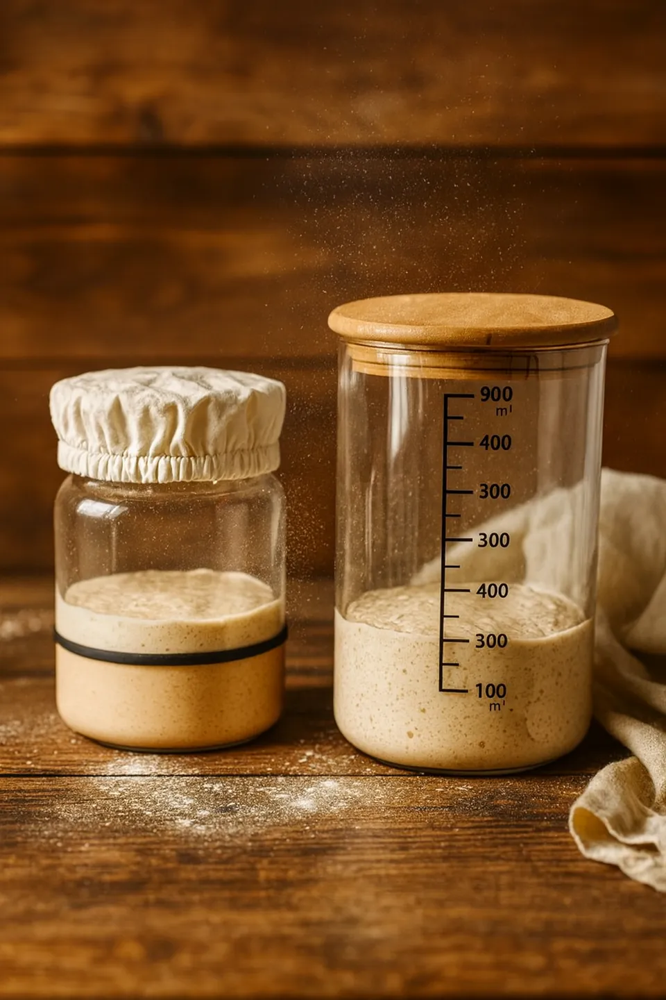
Bon à savoir
- Lieu
- Rishon LeZion · Shikun HaMizrach · chez l'hôtesse
- Dates
- Pour l'instant, les ateliers s'ouvrent à la demande et sur réservation préalable. Vous pouvez vous réunir en groupe ou rejoindre la liste des personnes intéressées, et quand une nouvelle date ouvrira, je vous préviendrai en premier.
- Un atelier chez vous
- Envie d'un atelier en soirée chez vous ? Il peut être organisé à l'avance pour un groupe.
Le nombre de places est limité afin de préserver la qualité et l'expérience. Si cela vous parle, c'est le moment de réserver votre place.
Atelier de cuisine naturelle sans gluten
Manger sans gluten de façon naturelle : sans farines transformées, sans mélanges tout prêts et sans compromis sur le goût.
SarrasinLentillesIngrédients simples100 % naturel
200 ₪ par participante · seulement 6 places à chaque session
Pendant l'atelier, vous découvrirez
- Pourquoi tous les produits « sans gluten » ne sont pas forcément le meilleur choix.
- Comment préparer une cuisine naturelle, simple et savoureuse.
- Des matières premières qui changeront votre regard sur la cuisine.
- Et bien sûr... beaucoup de dégustations et de surprises.
Chaque participante reçoit
- Un pain de sarrasin personnel cuit spécialement pour vous.
- L'accès à mon recueil de recettes numérique mis à jour.
- Un riche assortiment de plats et de dégustations de ma cuisine.
- Du temps pour les questions, les conseils et un accompagnement personnel.
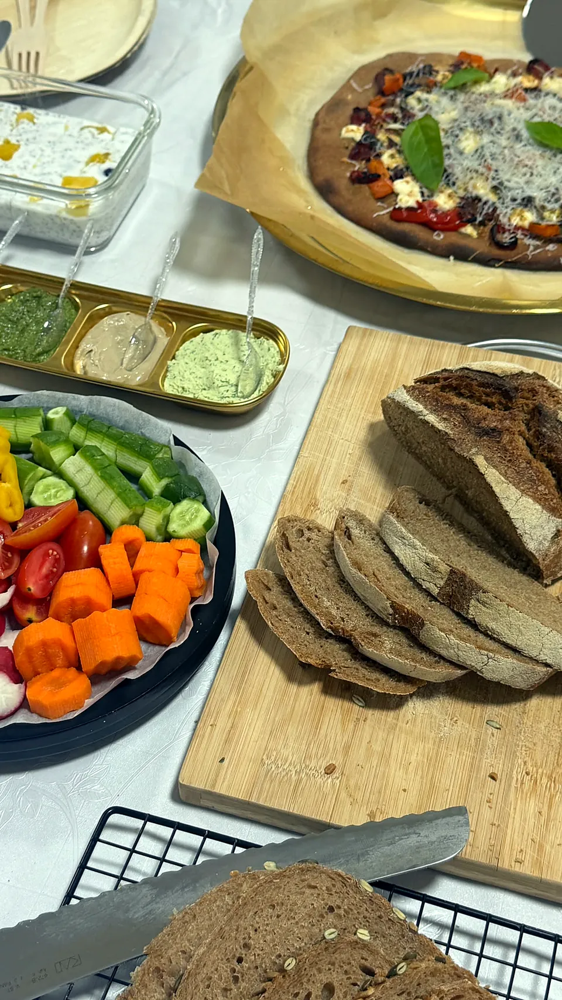
Avis
Messages originaux reçus de participantes après les ateliers, en hébreu. Vous pouvez faire défiler latéralement.
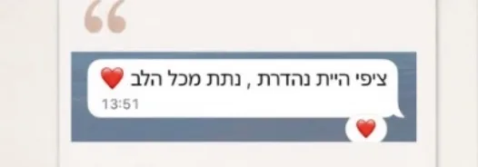
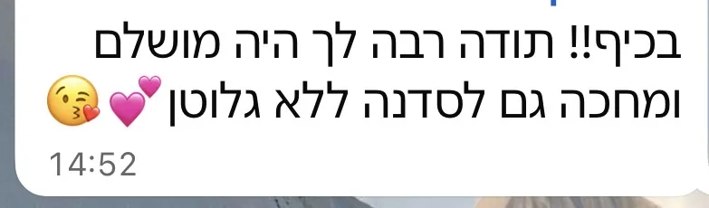
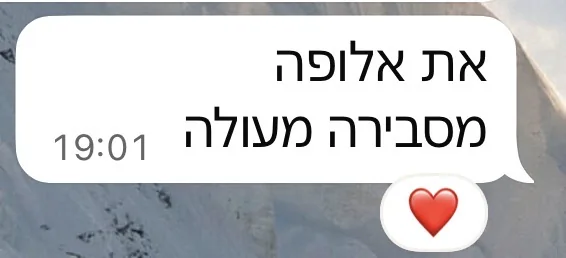
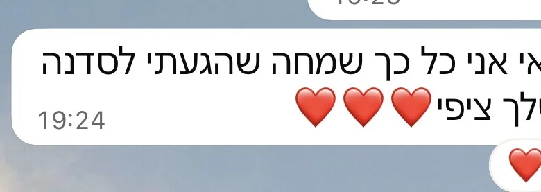
![Message WhatsApp d'une participante : J'avais déjà publié ce pain dans le groupe, mais je tenais à le joindre ici et à te dire quelques mots en privé. C'était un atelier excellent !!! Enfin, j'ai l'impression de pouvoir me faire un pain au levain sain et bon pour moi !!!! (Comme je te l'ai dit, j'avais déjà suivi un atelier de ce genre il y a deux ans, mais je n'avais pas vraiment réussi à m'en servir ensuite.) Ton explication était excellente et la méthode est vraiment simple !!! Je ne vais pas devenir l'esclave d'un levain à nourrir, et c'est le plus important pour moi. Et je te l'ai dit aussi pendant l'atelier, ton influence et l'inspiration que tu m'apportes ont commencé bien avant l'atelier... alors merci, ma chère. *Je l'ai un peu oublié dans le four, mais le goût et la croûte, waouh](../img/msg-ortal-960.webp)
Les pains des participantes
Photos envoyées après leurs cuissons à la maison.
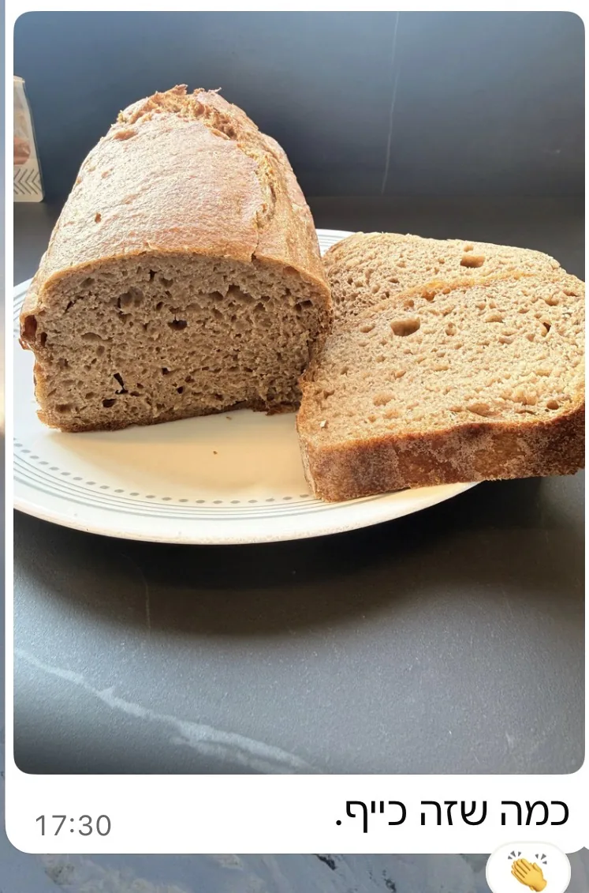
« Quel plaisir ! » 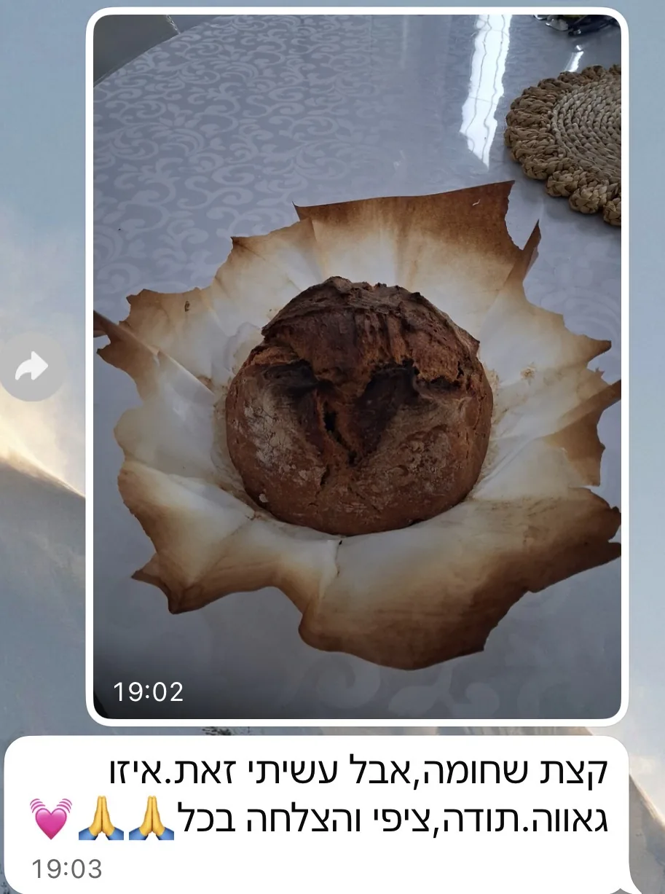
« Un peu trop foncé, mais je l'ai fait. Quelle fierté ! » 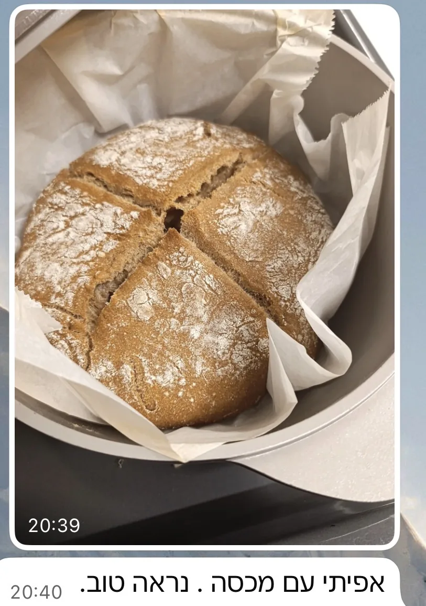
« Je l'ai cuit avec un couvercle. Il a l'air bon. » 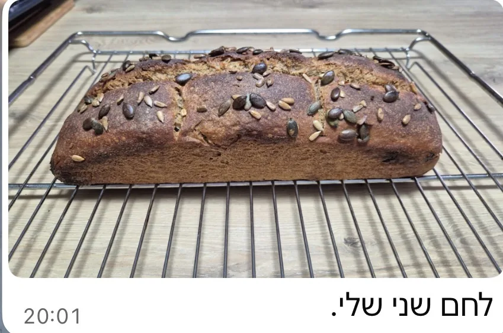
« Mon deuxième pain. » 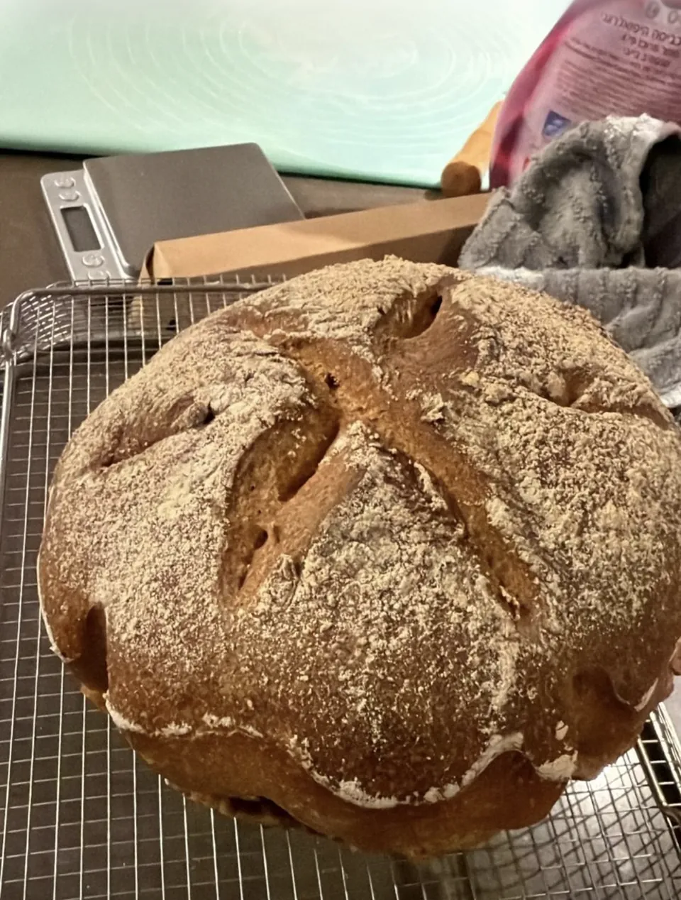
« Mon deuxième pain au levain »